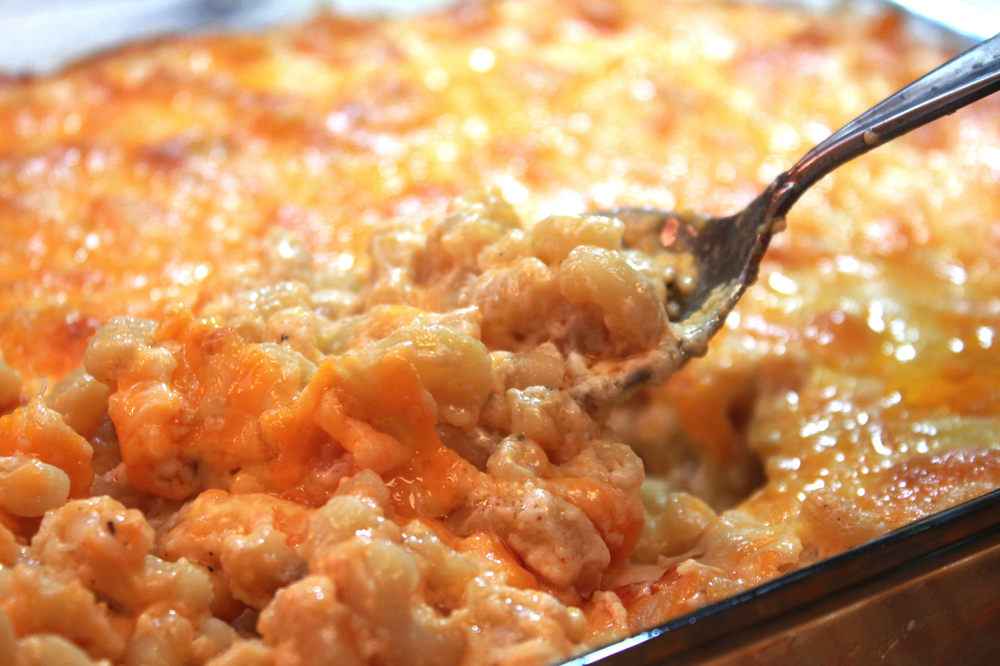

Food Macaroni and Cheese

Description
Soul Food Macaroni and Cheese made with 6 different cheese. No Velvetta no
eggs required.
Ingredients
- 1 lb elbow macaroni pasta uncooked
- 1 tsp salt to salt the water for the pasta
- 8 cups water
- 1 cup evaporated milk
- 1 1/2 cup half & half
- 4 tbsp unsalted butter not margarine
- 2 tbsp all purpose flour
- 4 oz cream cheese
- oz gouda cheese shredded or cubed
- 8 oz creamy havarti cheese shredded or cubed
- 8 oz sharp cheddar cheese shredded
- 4 oz mozzarella cheese shredded
- 4 oz colby jack cheese shredded
- 1 tsp seasoning salt OR plain salt
- 1 tsp onion powder
- 1 tsp garlic powder
- 1/2 tsp freshly cracked black pepper
- 1 tsp smoked paprika
Instructions
- Pour 8 cups of water into a pot, and sprinkle in 1 tsp of salt.
-
Bring the water to a boil, over high heat, then add in the elbow
macaroni pasta.
-
Cook the pasta until it is al dente ( cooked but still firm), then drain
the pasta and rise it under cool water
-
Place a large sauce pan over medium heat, then toss in 4 tbsp of butter.
-
Melt the butter down completely, then sprinkle in 2 tbsp of flour.
-
Whisk the ingredients until they are well incorporated, then pour in the
evaporated milk and half & half.
-
Whisk the ingredients, and continue to cook it over medium heat for
about 3 minutes.
-
Reduce the heat to low, then add in the cream cheese, gouda, and
havarti.
-
Stir the mixture until the cheese melts, and you have a nice creamy
cheese sauce.
-
Sprinkle in the seasoning salt, pepper, paprika, onion powder, and
garlic powder. Mix until well incorporated.
-
Toss the macaroni pasta into a large pot, and pour in the cheese sauce.
-
Stir everything until it is well combined, then pour half of the
macaroni and cheese mixture into a 9 x 13 bake dish.
-
Sprinkle some of the sharp cheddar, mozzarella, and colby jack on top of
the mac and cheese.
-
Next add the remaining macaroni and cheese into the bake dish, and top
it off with the remaining cheese.
-
Bake the macaroni and cheese, in a preheated oven, on 350 F for 25-30
minutes.
- Remove from the oven, and let sit for 5 to 10 minutes.